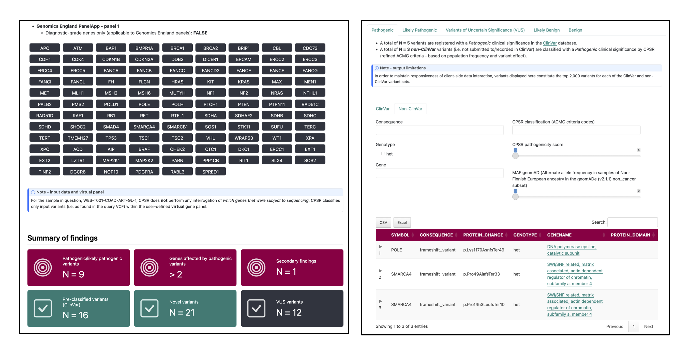

Cancer Predisposition Sequencing Reporter 
The Cancer Predisposition Sequencing Reporter (CPSR) is a computational workflow that interprets DNA sequence variants identified from next-generation sequencing in the context of cancer predisposition.
CPSR accepts a query file with germline variant calls (SNVs/InDels) from a single sample (i.e. cancer patient), encoded in the VCF format. Through comprehensive gene and variant annotation procedures, CPSR offers the following main functionalities to the user:
- Flexible selection of cancer predisposition genes subject to analysis and reporting - through the use of virtual gene panels
- Variant classification (Pathogenic to Benign) through a dedicated implementation of ACMG/AMP guidelines
- Detection of germline biomarkers - for prognosis, diagnosis, or drug sensitivity/resistance in cancer
- Reporting of secondary/incidental findings (ACMG recommendations)
- Interactive HTML output report with detailed variant information, gene annotations, and external links to relevant databases
The CPSR workflow is integrated with the framework that underlies Personal Cancer Genome Reporter - PCGR. While PCGR is intended for reporting and analysis of somatic variants detected in a tumor, CPSR is intended for reporting and ranking of germline variants in protein-coding genes that are implicated in cancer predisposition and inherited cancer syndromes.
Snapshots of sections in the quarto-based cancer predisposition genome report (artificial sample, with more findings than usual):

News
-
October 2024: 2.1.1 release
- cosmetic fixes in HTML report
-
September 2024: 2.1.0 release
- data bundle upgrade
- re-calibration of classification tresholds
- CHANGELOG
- August 2024: 2.0.3 release
- July 2024: 2.0.1 release
- June 2024: 2.0.0 release
-
November 2022: 1.0.1 release
- Added CPSR logo (designed by Hal Nakken)
Getting started
-
Learn more about
- Details regarding CPSR input files, and how they should be formatted
- The types and contents of CPSR output files
- ACMG variant classification procedure used in CPSR
- The list of virtual gene panels available in CPSR